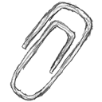

Por primera vez, el ELEN se realiza en Argentina, en una de las provincias con mayor diversidad de ambientes del país. Será una oportunidad inmejorable para aquellos que desean conocerla, así como también para los que desean volver. También va a ser una buena oportunidad para consolidar la participación de todos los vinculados a este tema en la región, integrando a nuevos participantes a esta “red lepidopterológica” y dando continuidad a lo realizado en encuentros anteriores.
El programa científico sigue una estructura similar a la de encuentros anteriores y se espera que la interacción entre los participantes se vea favorecida por el desarrollo del evento en la Residencia Universitaria de Horco Molle, enclavada en corazón de del cerro San Javier, rodeada de una vegetación exuberante y muchas mariposas.
También será una oportunidad para realizar un homenaje al Dr. Fernando Navarro, quien fuera promotor de la idea que este encuentro se realice aquí y quien brindó multitud de oportunidades para que esta área de investigación entomológica se esté desarrollando actualmente en el país.
 ÚLTIMAS NOTICIAS
ELEN 2015
Se encuentra disponible el programa tentativo para el V ELEN a realizarse del 16 al 20 de Nociembre de 2015 en la Residencia Universitaria de Horco Molle, Tucumán. Más...
 INSTITUCIONES
INSTITUCIONES
Organizadoras
- Facultad de Ciencias Naturales - Universidad Nacional de Tucumán (FCN - UNT)
- Facultad de Ciencias Exactas Físicas y Naturales - Universidad Nacional de Córdoba (FCFyN - UNC)
- Fundación Miguel Lillo
- Consejo Nacional de Investigaciones Científicas y Técnicas (CONICET)
Colaboradoras
- [En construcción]